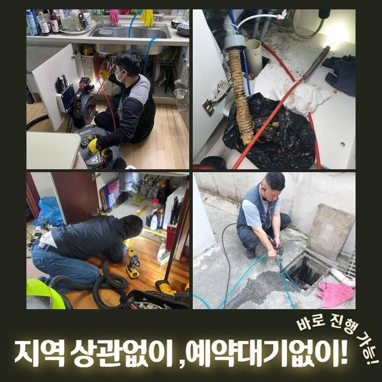
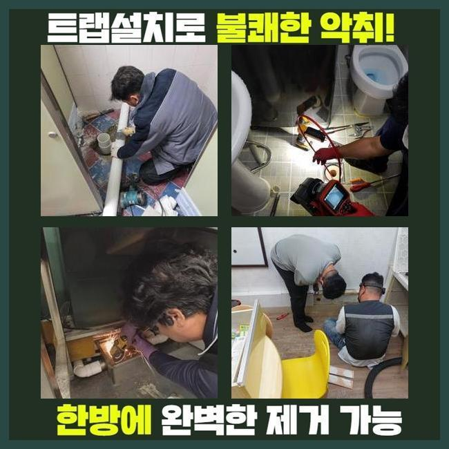
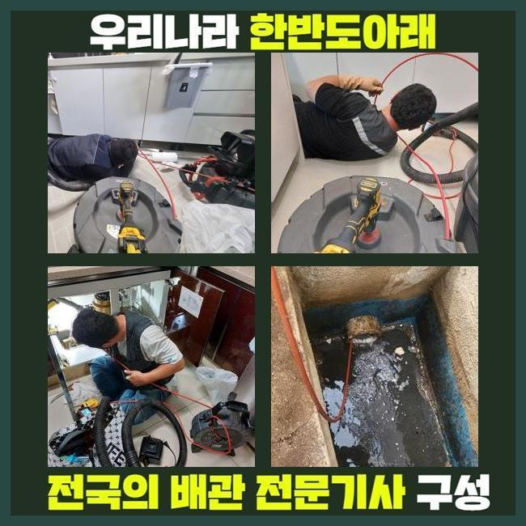
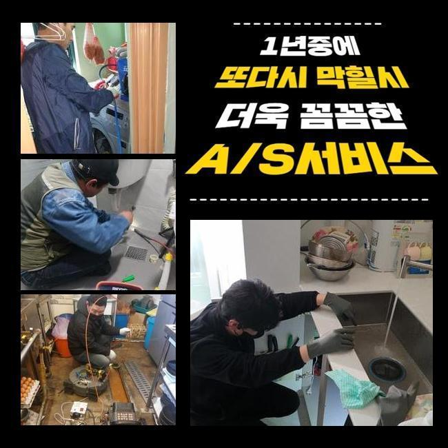
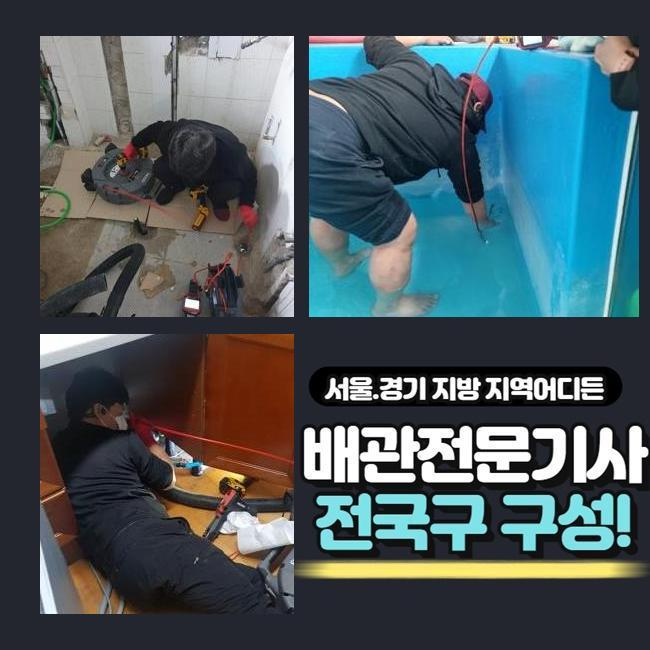
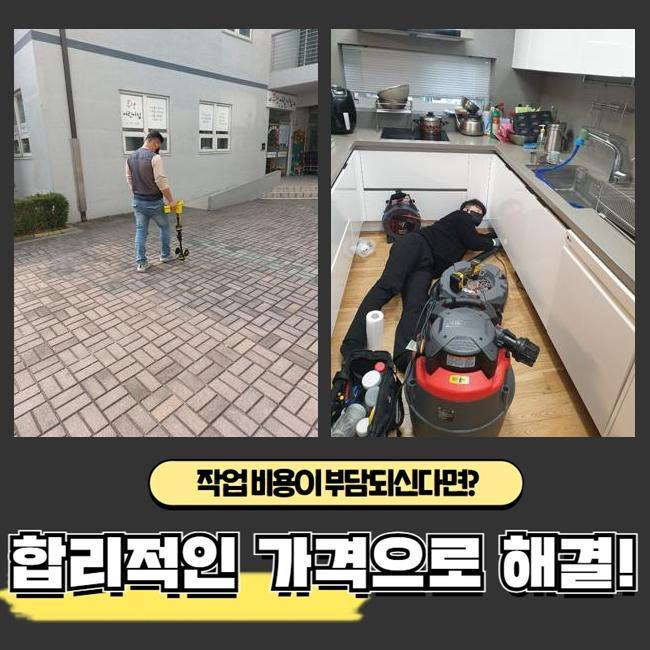
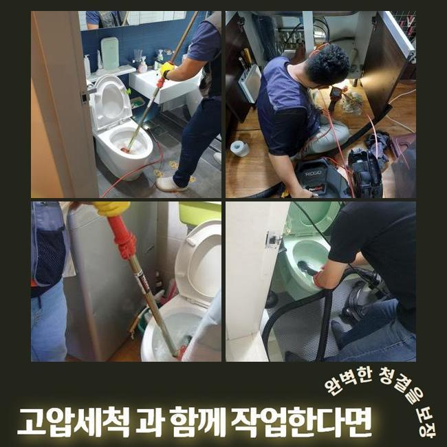

🏠 도봉 방학동화장실하수구뚫음 창동 하수구뚫는업체 배관공사
용인 하수구막힘 전문 시공 후기

📋 작업 개요
- 위치: 용인
- 서비스 유형: 하수구막힘, 배관막힘, 역류해결, 뚫는업체, 고압세척, 설비공사
- 작업 일시: 2025. 3. 12. 19:42
- 업체명: 하수구수사대 (010-5615-2118)
🔍 문제 상황
도봉 방학동화장실하수구뚫음 창동 하수구뚫는업체 배관공사
저희전문진은 일주일 전 상업시설의 통수장애를 해결하고자 달려가보았습니다
연락하셨던 고객분의 설명을 듣고 저희의경우 상가내의 화장실부분에서 골치아픈 이물질 역류 막힘들을 해결할 목적으로 현장당도를 했는데요
고객분은 해당 문제로 다양한 민원까지 수용해야했던 상황이였어요
이 모든 상황들을 조속히 조치해줘야했기에 저희들은 서둘러 도착해 배수관을 살폈죠
지금까지 누적되는 슬러지가 관로를 좁힌것을 목격하고 조속하게 고쳐냈는데요
그간의 사례로 추측하니 이런 오염물들은 보통 메인관에서 관찰되기에 이같은 증세가 생겨난 걸로 생각했죠
그리하여 신속하게 외부쪽으로 이동하여 증상을 발현하는 하수관의 지점을 확인하고자 검수를 시작했는데요
탐지기기를 운용하여 배관의 부위를 특정시켰고 내측을 살폈더니 오염상태는 심각했던 모습이였어요
내부에서 시작되어 쌓이게된 오수들의 잔해들과 외부쪽에서 흘러온 폐기물들도 엉켜있었죠

🔎 원인 분석
💡 전문가 진단: 정밀 진단 장비를 사용하여 슬러지의 고착 여부를 판명하고 타격/세척 작업을 실시했습니다.
이러한 통수장애를 시정하기위하여 빠르게 적합한 대응을 하게 되었고 상가빌딩의 시설을 장기간 유지되게끔 했죠
관로에 이물들이 누적될 시 많은 막힘들을 생기게하기에 해결들을 미루지않는게 필요하죠
진단을 실시하니 잔해물이 구간 마다 자리하고 있는걸 확인했는데요
오염원은 지금까지 쌓인다면서 고착물로 크기를 키워가고있었습니다
이것때문에 막히는 결함이 등장한것이라 생각하게되었습니다
그러므로, 장비들을 통해 관로를 깨끗히 만들기로 했습니다
다양한 기계를 써서 배수구를 세척해줄때에는 높은 압력의 물줄기가 이행되어야해요
만약에 집수시설에 이물들이 존재할 경우 자주 쓰이는 해결책으로는 개선을 꿈꾸기엔 힘든데요
그리하여, 고압노즐을 사용해 안전하게 고착물들을 싹쓸이하는게 중요하겠습니다
컨디션을 회복시키면 배수관을 청결하게 사용할 수 있고 결함들이 야기되는 것을 미리 예방하게 됩니다
그리하여, 배수관을 시공하는 시점에는 고압 세척과정을 고려해보는것도 합리적인 방책으로 다가올 수 있죠

🔧 작업 과정
같은 맥락으로 잔해물이 누적되지 않을 정도로 때때로 유지시켜주는게 필요하고 적절하게 조치한다면 수월하게 배수정체를 해결할 수 있습니다
그렇기에 결함이 발생했을 때는 안정적인 시공이 중요하고 전문가들의 도움으로 튼튼한 배수 과정들을 지켜내는게 실시되야했습니다
기술적인 부분도 꼭 필요하겠으나 전문적인 솔루션을 통해 배관을 깔끔하게 지켜내는게 실질적인 방법들이 됩니다
일련의 과정들을 제대로 이행하려면 구조적설계와 특수성을 파악해야해요
배수관은 수많은 재질들로 이뤄져있고 시간이 흘러 사용기한이 하락하기에 무분별한 세기를 이용하는건 위험할 수 있습니다
내구성과 위험요소들을 인지하고 적합한 압력들을 운용해주어야 합니다
해당 사항들을 지켜준다면 고압세척들로 최적의 배관컨디션을 얻게되실거에요
해당 시점에 이용한 석션장치는 흡입을 실시해 배수관의 잔여물질들을 안전하게 제거했습니다
석션장치에 빠져나온 오염물의 잔해를 확인하였고 내시경기기를 밀어넣어 깊은 지점을 살피니 잔해들이 대다수라 배관공간을 협소하게 했죠
이를 확인하고 타 방법을 실시해 저희들은 이곳에서 발생한 통수장애를 서둘러 효율적으로 해결해주고 매립위치와 오염물의 위치들을 특정하고 작업들을 이행한 결과 알맞는 물의 흐름을 확보했습니다
이것은 일반적으로 잔해가 내측에 쌓인까닭에 축적되는 문제들로 안에서부터 좁아진 탓에 유수흐름들이 정체되는 현상들이 우리 앞에 다가옵니다
이럴땐 전문진의 도움으로 내시경기기를 운용해 구석구석 검수하고 근간이 되는 원인들을 제거시키는게 실시되야했습니다
이러한 작업들을 진행하며 저희들은 타겟이되는 부위로 세척라인을 삽입해주었고 2M 라인에선 뭉친 기름때가 쏟아지며 빠져나가는것을 관찰했죠
허나 기름슬러지가 자리하고있는 3미터 포인트에선 내구성의 양상을 보고 노즐의 압력을 조정하여 세척들을 진행시켰죠
이물들의 흡착정도가 심각하여 온수 고수압세척들을 수행했는데 안전을 지켜낼 수 있는 요소를 상기하고 기름뭉치들을 처리했죠
막히게되는 사태는 불현듯 나타나 다양한 고충을 불러일으킵니다
하수정체는 대다수 고착물이 문제가되서 발생되기에 골든타임 내에 통수오류를 정정해주어야 하겠습니다


✅ 작업 완료
고객의 고민을 덜어드리기위해 조속히 해결하겠습니다
막힘들을 조사하고 상황별 개선사항을 결정하여 작업에 돌입합니다
신속한 시공이 중요하므로 오랫동안 지체시켜선 안되죠
해결책들이 필요하실 때에는 편하게 의뢰해보세요!
결함들이 발생하면 조치에 힘쓰시어 안정적이고 온전한 컨디션을 선사하겠습니다




⚠️ 하수구 배관 막힘 예방 및 관리 가이드
- ✅ 머리카락, 비닐, 물티슈 등 물에 분해되지 않는 이물질은 하수구 유입을 절대 금지해 주세요.
- ✅ 하수구 거름망을 씌우고 모여진 이물질은 주기적으로 쓰레기통에 바로 비워주셔야 합니다.
- ✅ 배관 노후가 심할 경우 이물질이 더 쉽게 걸리므로 주기적인 배관 세척(고압세척 등)을 권장합니다.
- ✅ 작업 후 1년 이내 재발 시 하수구수사대에서 무상 A/S 보증 서비스를 제공합니다.
💡 핵심 정리
- 확실한 장비 작업(내시경 점검 및 샤프트 스케일링)으로 원인을 뿌리 뽑습니다.
- 작업 후 1년 이내에 동일한 부위 재발 시 100% 무상 A/S 서비스를 보장합니다.
- 서울 · 경기 · 인천 전 지역에 24시간 언제든 긴급 출동할 수 있도록 항시 대기 중입니다.
❓ 자주 묻는 질문 (FAQ)
🚨 용인 하수구막힘 문제로 고민이신가요?
정확한 원인 진단과 확실한 시공으로 재발 없는 해결을 약속드립니다.
24시간 긴급 출동 | 서울 · 경기 · 인천 전지역 | 1년 내 재발 시 무상 A/S